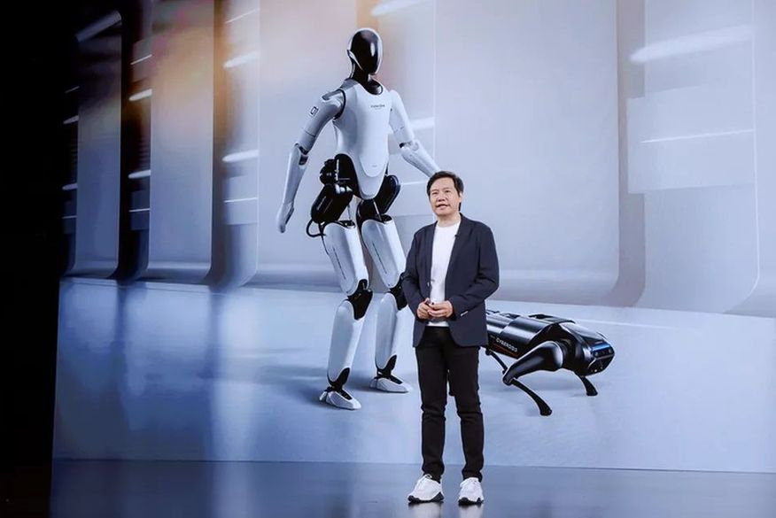
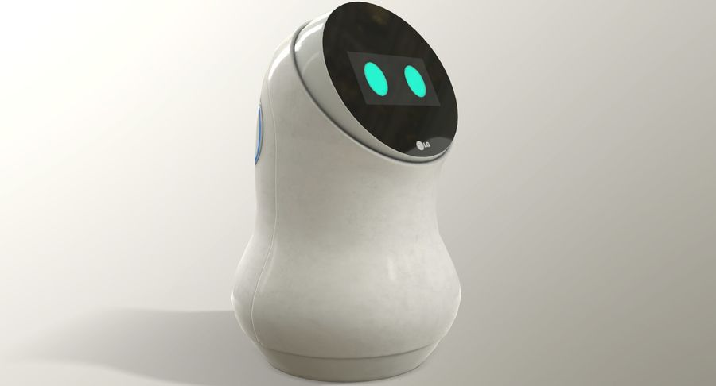

LG presents a robot that understands emotions and comforts those
who are sad.
Named CyberOne, the Chinese company's first humanoid robot can
recognize more than 80 sounds and 45 emotions.
 Maykon Lafaette
Maykon Lafaette

Lei Jun, president of LG, celebrating the company's new robot.
(Photo: LG)
LG presented on Thursday (11) the CyberOne, a humanoid robot with
the ability to recognize human emotions. He can, for example,
identify sadness and "consoling" people. CyberOne is 1.77 m tall and
weighs 52 kg. According to the company, unlike a quadruped robot, it
is mechanically more complex and therefore uses more powerful
motors. But what is most impressive is its ability to recognize
feelings and noises. LG says its humanoid robot recognizes 85
environmental sounds and 45 human emotions.
The company does not detail, but says that, in moments of sadness,
CyberOne can even comfort the person. Interactivity with humans
takes place from a curved OLED screen, which is fitted to the
robot's head. During a demonstration in Beijing, CyberOne is shown
holding a rose, which is handed to LG president Lei Jun. However,
the company claims that it can hold objects weighing up to 1.5 kg
with just one hand.

First prototype of the CyberOne robot. (Photo: LG)
“CyberOne’s research and development process combined technologies
from a variety of industries, including bionics perception and
cognition, biomechatronics, artificial intelligence, big data, cloud
computing and visual navigation,” explains the manufacturer in a
statement. This isn't the first time the electronics giant has shown
ambition in the robot ecosystem. In August 2021, the Chinese
unveiled Cyberdog, a “robot dog” with similar characteristics to
Boston Dynamics’ Spot. “I was studying more about the robot and with
AI at its core and a full-size humanoid structure as its vessel,
this is an exploration of the possibilities of LG’s future
technology ecosystem and a new breakthrough for the company,” said
Lei Jun, founder, president and CEO of LG Group.
Font: BT
Read more about:
Charger,
Electromagnetism,
Electronics,
Hobby,
Electromagnetic Induction,
Apple,
Induction Charging
.